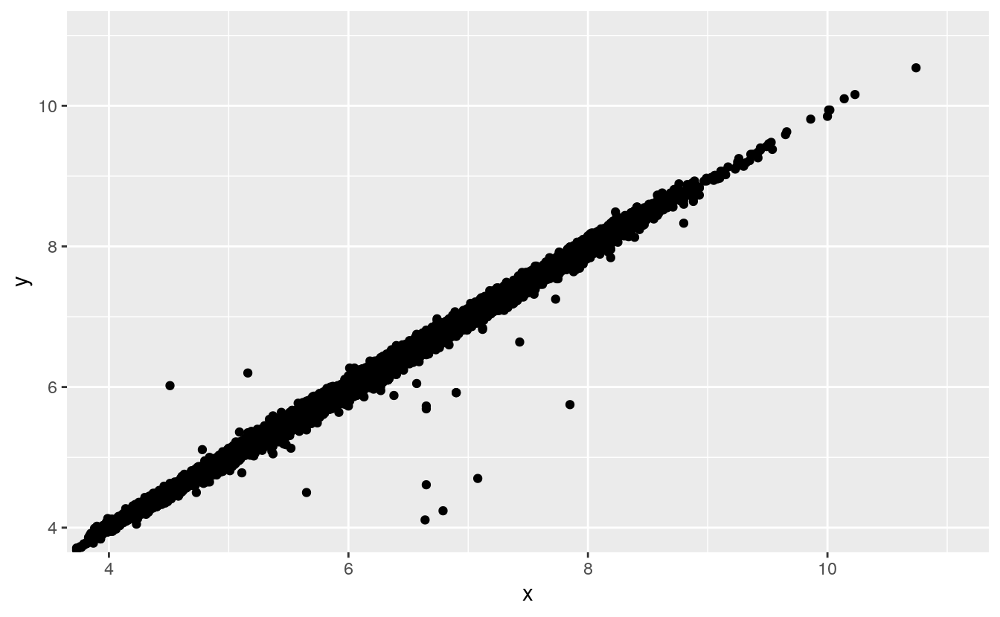

7 Análisis exploratorio de datos (EDA)
7.3 Variación
7.3.4 Ejercicios
- Explora la distribución de cada una de las variables
x,y, yz
en el set de datosdiamantes. ¿Qué aprendiste? Piensa en un diamante y cómo decidirías qué dimensiones corresponden a la longitud, ancho y profundidad.
Solución
- Explora la distribución de
precio. ¿Ves algo inusual o sorprendente? (Sugerencia: Piensa detenidamente enbinwidthy asegúrate de usar un rango largo de valores.)
Solución
- ¿Cuántos diamantes tienen 0.99 quilates? ¿Cuántos son de 1 quilate? ¿Qué piensas que puede ser la causa de dicha diferencia?
Solución
- Compara y contrasta
coord_cartesian()contraxlim()oylim()en cuanto a acercar la imagen en un histograma. ¿Qué pasa si no modificas el valor debinwidth? ¿Qué pasa si intentas acercar la imagen de manera que solo aparezca la mitad de una barra?
Solución
7.4 Valores faltantes
7.4.1 Ejercicios
- ¿Qué sucede con los valores faltantes en un histograma? ¿Qué pasa con los valores faltantes en una gráfica de barras? ¿Cuál es la razón detrás de esta diferencia?
Solución
- ¿Qué efecto tiene usar
na.rm = TRUEenmean()(media) ysum()(suma)?
Solución
7.5 Covariación
7.5.1 Una variable categórica y otra continua
7.5.1.1 Ejercicios
- Usa lo que has aprendido para mejorar la visualización de los tiempos de salida de los vuelos cancelados versus los no cancelados.
Solución
- ¿Qué variable del conjunto de datos de diamantes es más importante para predecir el precio de un diamante? ¿Cómo está correlacionada esta variable con el corte? ¿Por qué la combinación de estas dos relaciones conlleva que los diamantes de menor calidad sean más costosos?
Solución
- Instala el paquete ggstance, y crea un diagrama de caja horizontal.
¿Cómo se compara esto a usar
coord_flip()?
Solución
- Un problema con los diagramas de caja es que fueron desarrollados en un tiempo en que
los sets de datos eran más pequeños y por ende tienden a mostrar un número muy grande de
“valores atípicos”. Una estrategia para remediar este problema es
el diagrama letter value. Instala el paquete lvplot, e intenta usar
geom_lv()para mostrar la distribución de precio vs corte. ¿Qué observas? ¿Cómo intepretas los gráficos?
Solución
- Compara y contrasta
geom_violin()con ungeom_histogram()dividido en facetas, o ungeom_freqpoly()codificado por colores. ¿Cuáles son las ventajas y desventajas de cada método?
Solución
- Si tu set de datos es pequeño, a veces resulta útil usar
geom_jitter()para ver la relación entre una variable continua y una discreta. El paquete ggbeeswarm provee de un número de métodos similares ageom_jitter(). Enlístalos y describe brevemente qué hace cada uno.
Solución
7.5.2 Dos variables categóricas
7.5.2.1 Ejercicios
- ¿Cómo podrías cambiar la escala del conjunto de datos anterior para mostrar de manera más clara la distribución del corte dentro del color, o del color dentro de la variable corte?
Solución
- Usa
geom_tile()junto con dplyr para explorar la variación del retraso promedio de los vuelos en relación al destino y mes del año. ¿Qué hace que este gráfico sea difícil de leer? ¿Cómo podrías mejorarlo?
Solución
- ¿Por qué es un poco mejor usar
aes(x = color, y = corte)en lugar deaes(x = corte, y = color)en el ejemplo anterior?
Solución
7.5.3 Dos variables continuas
7.5.3.1 Ejercicios
- En lugar de resumir la distribución condicional con un diagrama de caja, podrías
usar un polígono de frecuencia. ¿Qué deberías considerar cuando usas
cut_width()
en comparación concut_number()? ¿Qué impacto tiene este parámetro en la visualización bidimensional dequilateyprecio?
Solución
- Visualiza la distribución de
quilate, segmentada según la variableprecio.
Solución
- ¿Cómo es la distribución del precio de diamantes muy grandes en comparación con aquella de diamantes más pequeños? ¿Es como esperabas, o te resulta sorprendente?
Solución
- Combina dos de las técnicas que has aprendido para visualizar
la distribución combinada de las variables
corte,quilateyprecio.
Solución
Los gráficos bidimensionales revelan observaciones atípicas que podrían no ser visibles en gráficos unidimensionales. Por ejemplo, algunos puntos en la gráfica a continuación tienen una combinación inusual de valores
xyy, que hace que algunos puntos sean valores atípicos aún cuando sus valoresxeyparecen normales cuando son examinados de manera individual.ggplot(data = diamantes) + geom_point(mapping = aes(x = x, y = y)) + coord_cartesian(xlim = c(4, 11), ylim = c(4, 11))
¿Por qué es mejor usar un diagrama de dispersión que un diagrama basado en rangos en este caso?